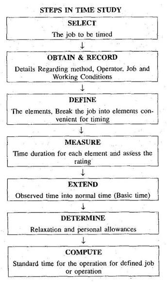
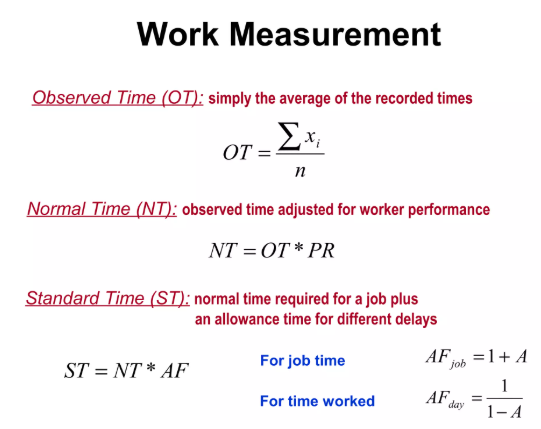
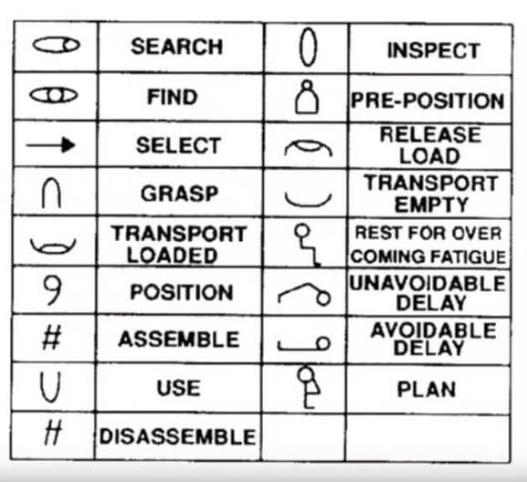
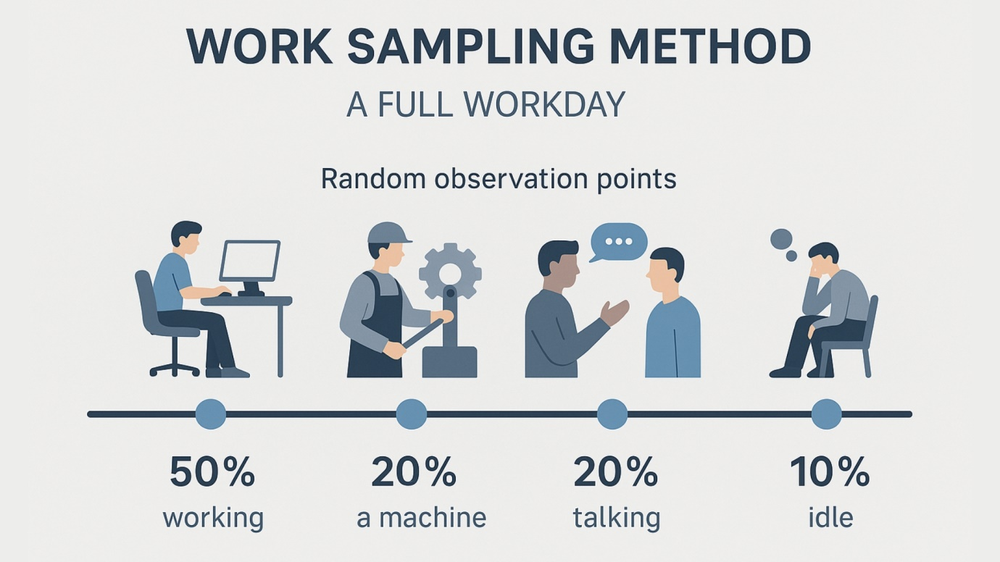

WORK STUDY
Exam Revision Guide for Competitive Exams
High-frequency topics: Method Study (SREDIM acronym), Standard Time formula $\text{ST} = \text{OT} \times \text{RF} \times (1 + \text{Allowance})$, Performance Rating Factor, Therbligs (17 basic motions), Work Sampling.
1. Core Concepts & Definitions
1.1 Work Study — Overall Definition
Work Study = Systematic examination of work methods and times
Two main branches:
1. Method Study: FIND BETTER WAY (improve process/method)
2. Time Study: MEASURE EFFORT (set standard time)
Purpose: Improve efficiency, productivity, and workplace safety
1.2 Method Study (SREDIM — Most-Tested Acronym)
SREDIM = Systematic approach to method improvement
S = Select: Choose operation for improvement
R = Record: Document current method (flow diagram, video)
E = Examine: Analyze each element critically
D = Develop: Propose improved method
I = Install: Implement new method
M = Maintain: Monitor and sustain improvements

Figure 1.1: Method Study SREDIM Procedure & Standard ASME Process Chart Symbols.
1.3 Work Measurement
Work Measurement = Determine time required for qualified worker to complete task
Two main methods:
1. Time Study: Direct stopwatch timing of repeated tasks
2. Work Sampling: Statistical sampling of activity (random observation)
Output: Standard time (for wage setting, scheduling, capacity planning)
1.4 Time Study Procedure
Time Study steps:
1. Select job to study (high-volume, repetitive)
2. Divide into elements (small, measurable sub-tasks)
3. Record: Time each element multiple times (5–10 cycles typical)
4. Calculate: Observed time (average of cycles)
5. Apply: Performance rating × Observed time = Rated time
6. Add: Allowances → Standard time
1.5 Observed Time, Rating Factor, and Standard Time
Observed Time (OT) = Average time from stopwatch for task element
Based on actual measurements of worker
Rating Factor (RF) / Performance Rating:
• 100% = Normal/standard pace
• <100% = Slower than standard (fatigue, lack of skill)
• >100% = Faster than standard (high skill, motivation)
Typically 85%–115% range
Rated Time (Normal Time) = OT × RF
Standard Time = Rated Time + Allowances (rest, fatigue, contingency)
1.6 Allowances (Frequently Tested)
Allowances = Extra time added to rated time for:
• Personal needs (2–5%): Rest, washroom
• Fatigue allowance (3–10%): Muscle fatigue recovery, depends on job difficulty
• Contingency allowance (2–5%): Unavoidable delays (machine breakdown, material shortage)
• Delay allowance: Unavoidable external delays
Total allowance typically 10–25% of rated time
Often expressed as percentage: ST = RT × (1 + %Allowance)

Figure 1.2: Standard Time Stack Breakdown — Observed Time ($\text{OT}$), Rating Factor ($\text{RF}$), Normal Time, & Allowances.
1.7 Therbligs (17 Basic Motion Elements)
Therblig = Basic, indivisible motion (elemental hand/body movement)
Examples:
• Reach: Move hand/arm to object
• Grasp: Secure object
• Move: Transport object
• Release: Let go of object
• Inspect: Examine object
• Transport Empty (TE): Move without load
• Transport Loaded (TL): Move with load
• Plan: Pause to decide method
• Delay: Pause due to external cause
• Process/Work: Machine operation (non-manual)
Used in motion study to optimize method

Figure 1.3: Therbligs — 17 Fundamental Hand/Body Motion Symbols in Motion Study.
1.8 Work Sampling (Statistical Approach)
Work Sampling = Random observations over time to determine % activity distribution
Advantages vs Time Study:
✓ Less intrusive (no continuous watching)
✓ Multiple workers/jobs sampled simultaneously
✓ Lower cost over long periods
Disadvantage:
✗ Requires many observations (statistical confidence)
✗ Cannot measure individual element times precisely

Figure 1.4: Work Sampling Statistical Technique — Random Observations & Sample Size Confidence Curve.
2. Essential Formulas & Principles
2.1 Standard Time Formula (Critical Exam Formula)
$$\text{Normal Time (NT)} = \text{Observed Time (OT)} \times \text{Rating Factor (RF)}$$
$$\text{Standard Time (ST)} = \text{NT} \times (1 + \text{Allowance Ratio}) = \text{NT} + \text{Allowances}$$
2.2 Observed Time Calculation
$$\text{OT} = \frac{\sum_{i=1}^{n} t_i}{n}$$
Average cycle time from $n$ stopwatch measurements (excluding obvious outliers).
2.3 Work Sampling Sample Size
$$n = \left( \frac{Z}{A} \right)^2 \frac{1 - p}{p} \qquad \text{or} \qquad n = \frac{4p(1-p)}{A^2}$$
Where: $p$ = Proportion of activity time, $A$ = Absolute or relative accuracy limit, $Z$ = Standard normal confidence factor (e.g., $Z = 2$ for $95.45\%$ confidence).
2.4 Productivity Improvement Formula
$$\text{Productivity Improvement (\%)} = \frac{\text{ST}_{\text{old}} - \text{ST}_{\text{new}}}{\text{ST}_{\text{old}}} \times 100\%$$
3. Method Study & Time Measurement Techniques
3.1 Techniques Comparison Matrix
| Technique |
Use / Scope |
Best For |
Exam Note |
| Method Study (SREDIM) |
Systematic job improvement via Select → Record → Examine → Develop → Install → Maintain |
Finding better process/layout/sequence |
VERY HIGH frequency — acronym always tested |
| Time Study (Stopwatch) |
Direct measurement of task time; measure 5–10 cycles |
Repetitive jobs with clear cycles |
Standard time calculation; rating factor applied |
| Work Sampling |
Random observations; statistical estimation of activity % |
Long-duration jobs; multiple workers; lower cost |
Less precise than time study but covers wider scope |
| Motion Study (Therbligs) |
Break task into basic movements; video/film analysis |
Optimize worker motion; reduce unnecessary movement |
Micromotion study; 17 therbligs elemental times available |
| Process Chart (Flow Diagram) |
Visual representation of process flow |
Identify inefficiencies, delays, long distances |
Part of record step in SREDIM |
| Predetermined Time Systems (PTS) |
Use standard elemental times (MTM, MOST) instead of measuring |
Design new jobs before actual production |
Fast, consistent; based on therbligs database |
3.2 Allowance Components
| Allowance Type |
Reason / Cause |
Typical % |
| Personal Allowance |
Washroom, drinks, personal needs |
2%–5% |
| Fatigue Allowance |
Recovery from physical/mental effort; depends on job difficulty |
3%–10% (higher for heavy/difficult jobs) |
| Contingency Allowance |
Unavoidable delays: tool breakage, measurement, minor adjustments |
2%–5% |
| Delay Allowance |
External delays beyond worker control |
Variable (included if frequent) |
4. Key Points to Remember
- Work Study has two branches: Method Study (improve process) and Time Study (measure effort). Both aim to increase productivity.
- SREDIM = Select, Record, Examine, Develop, Install, Maintain. VERY FREQUENTLY TESTED acronym.
- Standard Time = OT × RF × (1 + Allowance). Critical exam formula; three components must be correct.
- Observed time is average from stopwatch measurements (5–10 cycles typical). Outliers may be excluded before averaging.
- Rating factor (performance rating) 100% = standard pace. <100% means slower, >100% means faster than standard worker.
- Allowances (10–25% of rated time) cover personal needs, fatigue, contingency delays. Added to rated time to get standard time.
- Fatigue allowance depends on job difficulty: Heavy jobs get higher fatigue allowance; easy jobs get lower allowance.
- Therbligs = 17 basic motion elements (reach, grasp, move, release, etc.). Used in motion study to optimize worker efficiency.
- Work Sampling uses random observations over time to estimate activity percentages. Requires many observations for statistical accuracy; less intrusive than time study.
- Time Study best for repetitive jobs with clear cycles; work sampling best for varied/long-duration jobs and multiple workers.
- Method Study goal: Reduce cycle time/standard time to increase output per hour. Efficiency improvement = $\frac{\text{Old ST} - \text{New ST}}{\text{Old ST}} \times 100\%$.
- Process chart (flow diagram) documents current method during Record step of SREDIM. Identifies delays, bottlenecks, long transportation distances.
- Predetermined Time Systems (MTM, MOST) use standard elemental times for new job design. Faster than stopwatch time study; based on therbligs.
- Performance rating adjusts for worker speed variations; must be applied by trained time study engineer to ensure consistency.
- Minimum sample size in time study and work sampling ensures statistical confidence. Company standards often specify 5–10 cycles for time study; statistical formula for work sampling.
Revision Focus Areas (Frequency-Ranked):
1. SREDIM acronym & steps | 2. Standard Time formula & calculations | 3. Rating Factor application | 4. Allowance categories | 5. Therbligs & Work Sampling